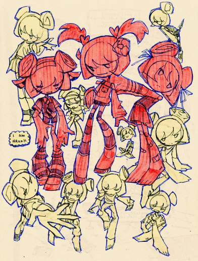

Aveline

| Gender | Female |
|---|---|
| Occupation | Pop Star |
Publicly introduced through Fictophile, Aveline is a famous solo popstar. To cope with the stress of her current stardom, she is often seen taking drugs. She appears to have a one sided relationship with Art.
Appearance
Aveline's hair has space buns that resemble sheep horns. She cycles between multiple outfits, but the most prominent one is a sleeveless top with a heart on the center paired with a gray tutu. Similarly to Hat, the stripes on her socks is usually not aligned.